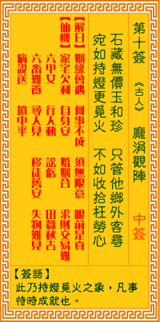

观音灵签第十签 【庞涓观阵】 |
 | |||
柜藏无价宝和珍 只管他乡外处寻 好似将灯来觅火 不如安静莫劳心 |
||||
| 【吉凶】 | 下下签 | 【宫位】 | 寅宫 | |
| 【签语】 | 此卦持灯觅火之象，凡事待时成就也。 | |||
| 【解曰】 | 姻缘会遇 何事不成 须无限意 眼前是真 | |||
| 【仙机】 | 此签家宅欠利，自身安，求财难，交易难，婚姻合，六甲女，行人动，讼亏，田蚕秋吉，六畜难养，寻人见，移徙旧安，失物难见，病殁送，山坟中平。 | |||
| 【详解】 | 木盒里就暗藏难以计价珍奇的宝物，却只会想着往外乡异地去寻找;就好似已把了盏灯却还到处找火，还不如先冷静下来别再劳心。 机缘若遇，何事不成，春无限前似真。此签将灯觅火之象，凡事自就。 将灯不见火之象，凡事自就之表征者，逢此下下之时，宜顶天拜地，始可得无灾，是谋望之不成，修吾身后，积德，布施，后必有回天之机，亦即是机缘若遇何事不成春无限意眼前似真此者也。 此签有”枉费心机”之意。奉劝当事人，凡事不要强求。人很难感到知足，总是想要更多、想追求的更好，于是千般用计、终日汲汲追求，只为了据为己有，好满足自身的欲望。须知”欲望”乃是无穷止尽的深渊，让人深陷其中而浑然不觉。谨记”知足常乐”，应珍惜现在身边所拥有的事物，淡泊物质名利的渴求。在做任何事之前，先审慎评量自己是否需要。须知”命里有时终须有”，不属于自己的一切，就算强求也是枉然，只是白费心机而已。 | |||
| 【典故】 | 庞涓和孙膑同是春秋战国时代人，二人一起向鬼谷子学习兵法。庞涓先下山到魏国做事，掌管兵权；孙膑不久也下山会见庞涓，共为魏国服务。后来庞涓削了孙膑的双脚，使他残废。孙膑逃到齐国，被任军师，田忌任大将。孙膑令田忌带兵攻打庞涓，并排成阵势挑战，庞涓乘车观看，认得是孙膑的颠倒八门阵。结果庞涓破不了此阵，大败逃回魏国。 | |||